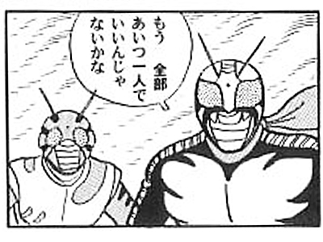

栗原さんがやったこと
栗原さんの野望
→ Effective C++ (3rd)の ナレッジを RED に適用しよう
→ そして最強のC++er になって、REDの開発を「もう全部 栗原一人でいいんじゃないかな」という状況にしてしまおう

* Effective C++ は仲間を呼んだ
More Effective C++ (2nd):「Effecteve C++ (3rd)がやられたようだな」
Effective STL: 「ククク... 奴は 我らがEffective 四天王の中でも最弱」
Effective Modern C++: 「クララごときのネタに消費されるとは、我ら四天王の面汚しよ」
C++坂 （未完）
ならば、Effective Modern C++ にチャレンジするしかない！
* Modern Modern
**Effective Modern C++ とは？
- C++11/14 に対応した Effecitive C++
- Effective C++ 第3版では boost つかおうよ boost といっていたので、未来のC++ が 現代のC++ になった感が半端ない
- でも夢が現実になれば問題が噴出するのだよ...。 C++ は相変わらずC++なので地雷原
→再び望まれる安全経路マップ
C++11/14 とは
- かつて C++0x と言われていたもの
- Boost C++ libraries や C++
闇の軍団 コミュニティ の知見を反映した モダンなC++
- C++11 ...00年代にはまにあわなかったけれど 16進で言えば まだ 00 年代だよね..という言い訳をするも、心苦しくって早めに見切り発車した Modarn C++
- C++14 ...C++11 の残飯。とかいいつつ、追加された機能がないと使い勝手が残念なものが多いので、一言で言えば C++11 は残念な子。
* 主な機能 (Mayers による分類)
C++11/14 の主な機能はこんな感じ
- auto (型推論)
- スマートポインタ
- ムーブセマンティクス
- ラムダ(lambda)
- 並行性
* auto
- かつては「自動変数」を意味する auto
>||
void foo() {
auto int a; // 記憶クラス(auto): スタックに確保され、{} 脱出時に破棄。省略可
static int b; // 記憶クラス(static): 静的領域に確保され、破棄されない。省略不可
}
||<
いわゆるローカル変数のことで、現実にはほぼ100%省略され書かれることはないので、そもそもそんなキーワードが存在するなんてしらなかった C プログラマも多いのでは?
それが... 型★推★論 のキーワードに再利用され 30年ぶり(たぶん) に脚光を浴びることに
* auto を とりあえず使ってみよう
まずは以下のイけてないコード
>||
for (std::vector<RDevice*>::iterator it = m_deviceManager->devices().begin();
it != m_deviceManager->devices().end(); ++it)
{
m_devicePanes << createEditDevicePane(*it);
}
||<
std::vector ＜RDevice*>::iterator 。。。ってナンヤネン！こんなの書きたくない！
...という願いを叶えます。
>||
for (auto it = m_deviceManager->devices().begin();
it != m_deviceManager->devices().end(); ++it)
{
m_devicePanes << createEditDevicePane(*it);
}
||<
素敵！結婚して！！
*浮気モノ
・・・まぁ、実はこう書いたほうがさらによいけど。
>||
for (auto &dev : m_deviceManager->devices()) {
m_devicePanes << createEditDevicePane(dev);
}
||<
.
* auto の型推論のクセ
auto は 変数の型を初期化子から推定するが、実はそのルールはテンプレートの実引数推定ルールで型推定を行う。テンプレート実引数推定は、型の変換が入るため 素直に初期化子の型そのものにならない場合がある
>||
int const a1 = 0; // decltype(a1) = int const
auto a2 = a1; // decltype(a2) = int
int A = 42
int & a3 = A; // decltype(a3) = int &
auto a4= a3; // decltype(a4) = int
||<
………余計なことを。
* const とか & とかとサヨナラ出来なかったよ...
これを防ぐため、const や & などを auto の周りにかく、という手がある（というか、書かざるをえなくなる)
>||
auto & a4 = a3;
||<
結局 型の周りのデコデコしたやつとは、今持って腐れ縁ということだ。C++ にそんなに期待はしていなかったさ..。
* decltype(auto)
もう一つは、decltype を使うこと
>||
decltype(a3) a4 = a3;
||<
まぁ、当然動くわな。特に右辺値参照(後述)の場合、auto && foo = bar; のような記述では逃げられないので、このように書くしか無い。
が、それではあまりにもアレなので (たとえば bar がこんなに単純じゃない場合わけわかめになる）、C++14 からは
>||
decltype(auto) a4 = a3;
||<
と書くことができる。（なんて泥縄式！）
* オチ
でも 初期化子をカッコで囲むと、型が変わっちゃうんだよね...。
>||
int b1 = 42;
decltype(auto) b2 = b1; // decltype(b2) = int
decltype(auto) b3 = (b1); // decltype(b2) = int &
||<
これは、decltype 側の仕様なので....。
これが創りだす素晴らしいトラップがこちら
>||
delctype(auto) f1() {
int x;
return (x); // わぉ、xの参照を返すので戻り値の型も int& だ！
}
||<
ローカル変数の参照を返す関数が爆誕しました。C++14、恐ろしい子！
* 型推論が失敗するとき..
まぁちょっとだけクセはあるけれど、auto は 大変うまくいくので、もう変数や引数の型なんて全部 autoで書けばいい。→ 「項目 5: 明示的型宣言よりも auto を優先する」
でも、うまくいかなくって謎のコンパイルエラーでプログラマの生産性をガクリと落とすケースがある。それが C++。たとえば、こんなケース
>||
std::vector<bool> features(const Widget&);
bool highpriority = features(w);
||<
これを auto で書き換えてみる
>||
std::vector<bool> features(const Widget&);
auto highpriority = features(w);
||<
..が、これは期待通りに動かない。
* 型推論が失敗するとき..
実は vector<bool> に対する operator[] はコンテナ要素への参照を返さない！ bool & のように振る舞う std::vector<bool>::reference を返すため、auto の型推論がプログラマの期待とは違うものになってしまう。
このような、まるで○○のように振る舞う (= 振る舞いからは○○と区別できない）クラスを プロキシクラスという。スマートポインター や 式テンプレートなど、C++の暗黙の型変換や演算子のオーバーロードを使用した「見えない型」は、意外にもあなたの身近に漂っており、auto によって初めて可視化され牙を剥く！
どうしたらいいのっ！？教えて！ Scott Meyers 先生！
ETTI (static_castしておけば推論できるっしょイディオム)
こう書きます。
auto index = static_cast<int>(d * (c.size() -1));
「え、それauto とか書かずに素直に型を書いておけば..」とか言ってはいけない。
→ 項目6: auto が期待とは異なる型を推論する場合は ETII を用いる
(以下「2章 auto」冒頭より引用)
さらに推論規則に完全に準じているにもかかわらず、プログラマから見て結果が完全に間違っていることがあります。この場合でも、従来の手書きによる型宣言に戻るなどは可能な限り避けるのが最善であり、autoが正しく型を推論できるようにする方法を把握しておくことが重要です。
...マジかよ Mayers 先生。
* つ Effective C++ (3rd Edition)
...は、
boost::shared_ptr とかで
もうみんな知ってるのるよね？
*ふりかえり -右辺値参照
誤解を恐れずにいえば、lvalueとは、明示的に実体のある、名前付きのオブジェクトであり、rvalueとは、一時的に生成される無名のオブジェクトである。
>||
struct X{};
int f() {return 0;}
int main() {
int i = 0;
i; // lvalue
0; // rvalue
X x;
x; // lvalue
X(); // rvalue
f(); // rvalue
}
||<
http://cpplover.blogspot.jp/2009/11/rvalue-reference_23.html
*ふりかえり -右辺値参照
これまでの C++ のリファレンスは、C++11 においては lvalue reference と呼ばれるものになる
何かのインスタンス生成したとき、本来であれば一度変数に束縛してからでないと参照引数には渡せないはずだが、C++03 までは、引数の型が const reference ならば rvalue を参照できる..という抜け道で回避していた
>||
void f( T const & ) {}
||<
でも、これは言語的には汚い...orz
→そこで rvalue reference の登場ですよ！
*ふりかえり -右辺値参照
これが右辺値参照だ！
>||
struct T{};
int main() {
T t;
// lvalue reference
T& lr1 = t;
T& lr2 = T(); // ★ERROR★
// rvalue reference
T&& rr1 = t; // ★ERROR★
T&& rr2 = T();
}
||<
文法キモいよね。で、何が嬉しいの???
*ふりかえり -右辺値参照
答え: コピーコンストラクタじゃ効率が悪すぎるとき（しかたがないから、生/スマートポインタ返してたよね）
>||
T & generator(){ return T(); }
T a( generator() ); // ★うげげ、コピーコンストラクタが動いちゃう
// generator() の戻り値なんてもう使えないのに
||<
というときに「右辺値参照だからコピーじゃなくてムーブでOKざますよ！」と言えるのが嬉しい！ ...ちなみに、ムーブコンストラクタはこうかく。
>||
class T {
pubilc:
T (T && r) {
this.ptr = r.ptr;
r.ptr = nullptr;
}
};
||<
さすが LR(1) で書けないSyntax は一味ちがう。もう何でもありだね
* std::move
早速本題 「項目23: std::move と std::forward を理解する」
>||
T temp;
T a( temp );
// ここ以降は temp は使われない
||<
のようなコードがあったとき、a( temp ) では copyコンストラクタ ではなく、moveコンストラクタ を実行して欲しいがそうはならない。そこで、プログラマがコンパイラに意図を伝えるために以下のようにする。
>||
T a( static_cast<T &&>(temp);
||<
右辺値にキャストしてあげれば moveコンストラクタが当然呼ばれる。
* 右辺値へのキャストが std::move だったんだよ！ ΩΩΩ< なっなんだってーーーっ!
いちいちキャストするのは面倒だし、なによりコードの字面から意図が伝わりにくい。そこで
>||
T a( std::move(temp) );
||<
を使うのが良い。
実際、std::move() の実装例は こんな感じになる
>||
template <class T>
inline typename std::remove_reference<T>::type&&
move(T&& t) {
return static_cast< std::remove_reference<T>::type&& >(t);
}
||<
&& は 右辺値参照じゃなかったのかよ...。
（「項目24:ユニヴァーサル参照と右辺値参照の違い」より引用）
実際には「T&&」には2つの意味があります。1つはもちろん右辺値参照です。（中略）
「T&&」が持つもう一つの意味は、右辺値参照か左辺値参照のどちらか一方を表すことです。（中略）
実質的に *どんなものにも* バインド可能です。
* ユニヴァーサル参照(universal reference)
実は「T&&」の Tに対して型推論が働くとき、&& は「左辺値参照」なのか「右辺値参照」なのかわからなくなる。例えば、
>||
templete<typename T>
void f(T && param);
||<
の場合。初期化子によりどちらになるかが決定する。
>||
Widget w;
f(w); // lvalue reference だった!
f(Widget()); // rvalue reference だった!
||<
もちろん auto による型推論でも発生する。
>||
auto && val2 = val1;
||<
のようなケース。
なんでこうなってるの？
http://cpplover.blogspot.jp/2009/11/rvalue-reference_23.html より引用
つまり、上記のコードの場合、f()に、lvalue referenceを渡すと、TがX &になり、続く&&は無視され、lvalue referenceとして取り扱われる。
実に不思議なルールである。しかし、これも理由あってのことなのだ。もし、これが出来ないとなると、プログラマは、わざわざ、lvalue referenceとrvalue referenceとで、似たようなコードを複数書かなければならなくなる。すべての組み合わせを網羅するには、膨大なオーバーロード関数が必要になる。引数が1個の場合は、オーバーロード関数は2個、引数が2個の場合は、4個、引数が3個の場合は、8個、引数が4個の場合は、16個もの、オーバーロード関数を書かなければならない。これでは、一体何のためのテンプレートなのだろうか。
幸いなことに、テンプレート関数の場合は、rvalue referenceでlvalue referenceも参照できるので、そのようなオーバーロード関数の指数関数的な増加は起こらない。
* std::move と std::forward の使いみち
まぁわかる(今も「const版」と「そうでない版」で 二重実装を強いられていることは忘れてあげよう）。でも一つ困ったことが起きる。
>||
template<typename T>
void f(T && t) {
X x( std::move(t) );
}
||<
…これは出来ない。なぜなら t に渡された値が 左辺値だった場合、moveして出涸らしにしてしまったら、大変だ..。でも move できるならしたいよね
しかし、実際にテンプレートをインスタンスするまでは move してよいかダメかわからないのは くまったものだ → テンプレートメタプログラミングがあるではないかっ！
* std::forword
そこで使うのが こんなテクニック
>||
template <typename T>
void f (T && t) {
X x(static_cast<T &&>(t));
}
||<
.
|* t に与えられるのは？ |*その時、型はどうなる？ |
| rvalue | T → X |
| lvalue | T → X& (続く&&は無視される)|
すると、lvalue でインスタンス化されたときのみ static_cast<T &&> は static_cast<T &> になり
このようなテンプレートを名前をつけてライブラリ化したのが std::forword()
ラムダ (lamuda)
- みんな大好き λ .. 山もあるよ！ http://wwwfun.kurims.kyoto-u.ac.jp/MtLambda.html

便利だけど、使用には C++ 特有の注意が必要。
* C++ の lambda
lambda はこうかく
>||
int main () {
[](){}; // →lambda
[](){}(); // →lambda を作って即実行
}
||<
* ちゃんと
lambda の構成要素は以下のようになっている
>||
[] // [ ラムダキャプチャー ]
() // ( 引数定義)
{} // 関数の本体
||<
引数本体、関数の本体は、通常の関数と同じように使う。例えばこんなふう
>||
[](int prm1, std::string prm2) { return 42; }
||<
戻り値の方は、body が一つのreturn文である場合は型推論されるが、そうでない場合は何を return しようが void になる(C++11)。明示的に指定するにはこうかく。
>||
[](int prm1, std::string prm2) -> int { return 42; }
||<
戻り値の型 の位置が若干キモイが、そんなことよりこれが構文解析出来てしまうことに驚きだ。
* きゃぷちゃーもーど？
- [] の中には 環境からキャプチャーするときの「キャプチャーモード」を指定する。
- C++11 のラムダ式のキャプチャーモードには、「参照キャプチャー」「値キャプチャー」の二種類がある。
-- 参照キャプチャー: [&](params...){body...} あるいは [&foo, &bar](params...){body...}
-- 値キャプチャー : [=](params...){body...} あるいは [foo, bar](params...){body...}
- C++14 のラムダ式はこれらに加え 「ムーブキャプチャー」(実は初期化キャプチャーの応用例)もできる
……なんでただの λ式が こんな面倒なことになってるんだ....orz
* もちろん ガベこれ がないからですよ
- C++ のラムダ式がキャプチャーできるのは、static ではないローカル変数だけ。
↑これ重要！↑
- 参照キャプチャーは、ラムダがそのローカル変数のスコープより長生きするなら不正参照になるから危険
- 常に値キャプチャーを使うようにするなら安全かというと、生ポインタのキャプチャーが危険 (lambdaの外でdeleteされうるから)
で・も、正しい C++ プログラマは delete を手で書いたりしないし、必ず Smart Pointer を使うので値キャプチャーにしておけば自動的に安全じゃないの?
...という訳にはいかないのが、C++ の男らしさよ...。
* 落とし穴 this
こんなコード、どうおもいますか？
>||
class Widget {
public:
void addFilter() const;
private:
int m_divisor;
};
void Widget::assFilter() const {
filters.emplace_back(
[=](int value) {return valute % m_divisor == 0;}
);
}
||<
じつは、やばい。
- ラムダが作られたメソッドの同僚メンバ変数foo の値キャプチャ
- これは foo が this->foo の シンタックスシュガーで、実は this の値キャプチャーがされる
- thisの偶発的 生ポキャプチャー!!?...キケンがアブナイでし
* 落とし穴 this
** 解決策
- 一度ローカル変数にコピーしてからキャプチャーする
- C++14 の「初期化キャプチャー(汎用ラムダキャプチャー)」を使う
** 悪意があるとしか思えない..
[](int value){...} (= キャプチャーモード指定なし) でも [m_divisor](int value){...} (= 明示的キャプチャー指定）でもコンパイルエラーで弾いてくれる。
でも [=](int value){...} だけは thisの値キャプチャーとして動いちゃうんだよね...。
* 落とし穴 static local
まずはこのコードを見てください。
>||
void addFilter() const {
static auto calc1 = computeSomeValue1();
static auto calc2 = computeSomeValue2();
static auto divisor = computeDivisor(calc1, calc2); // ←★
filters.emplace_back(
[=](int value) {return value % divisor == 0;}
);
++divisor; // ←★
}
||<
この lambda、自己完結してないんだぜ...。
static ローカル変数 の [=] キャプチャーは、実質的には参照キャプチャーになる。落とし穴。
デフォルト値キャプチャー指定の問題点
- C++において、クロージャがキャプチャーする変数の生存区間については、プログラマが意識して管理する他ない。
- 参照キャプチャーは危ないので、腫れ物に触るようにつかうだろう。でもそれは大変なので、大抵は値キャプチャーに倒したいよね
- にもかかわらず、値キャプチャーしても C++のブラックボックス内でゴニョゴニョされて ポインタになっちゃう場合があって、その場合実質参照キャプチャーになっちゃうんだぜ！？驚き最大限の法則）
- スマートポインターもこの件に関しては無力だ (thisの参照カウントは流石に無理っす)
Meyers センセー、キレる
なにをキャプチャーするかを明示的に示したほうが、意識もできるしコンパイルエラーにもなる
なんで作った デフォルト値キャプチャー ...orz (by Meyers)、以下引用 →項目31: デフォルトのキャプチャーモードは避ける
実質的にこのラムダはdivisorを参照キャプチャーしており、デフォルト値のキャプチャ節が示す内容とは全く矛盾しています。デフォルトの値キャプチャ節を避けるようにしていれば、このような誤解が発生する危険性を排除できます。
* Effective Modern C++
今回は以下の項目近辺を アバウトに徘徊しました
| 項目1|テンプレートの型推論を理解する|
| 項目2| autoの型推論を理解する|
| 項目3| decltypeを理解する|
| 項目5| 明示的宣言よりも auto を優先する|
| 項目6| auto が期待とは異なる型を推論する場面では ETII を用いる|
| 項目23| std::move と std::forward を理解する|
| 項目24| ユニヴァーサル参照をとるオーバーロードは避ける|
| 項目25| 右辺値参照には std::move を、ユニヴァーサル参照には std::forward を用いる|
| 項目33| デフォルトのキャプチャモードは避ける|
| 項目34| クロージャ内にオブジェクトをムーブする場面では初期化キャプチャを用いる|
まとめ
- C++11/14 移行の最大の障害と思われた Qt は、意外に Qt5 なら大丈夫ということもわかった（むしろ積極的に合わせていこうとしている）
- 現状の RED のソースコードも、gcc にオプションつけたらさくっとビルドできた
- 最大の障害は C++11/14 の 罠 そのもの
確かに厄介な落とし穴はある。しかしC++11/14 の主な落とし穴を 一通り理解してもらえれば、受ける恩恵は多い。
→ つまり、クララと騙し討ちして みんなに勉強してもらえば解決ってことだってばよ！
これでみんな C++11/14 移行しても大丈夫だよね
(C) 2013 BABE FILMS - MYRA FILM - CHELI FILMS - IRON MONKEY
ご静聴ありがとうございました
わたし達は、
人を支援するコ・ロボットの開発と提供を通して
人が新たな価値を想像することに貢献します。
コ・ロボット業界世界 No. 1 の
リーディングカンパニーで
あり続けます。